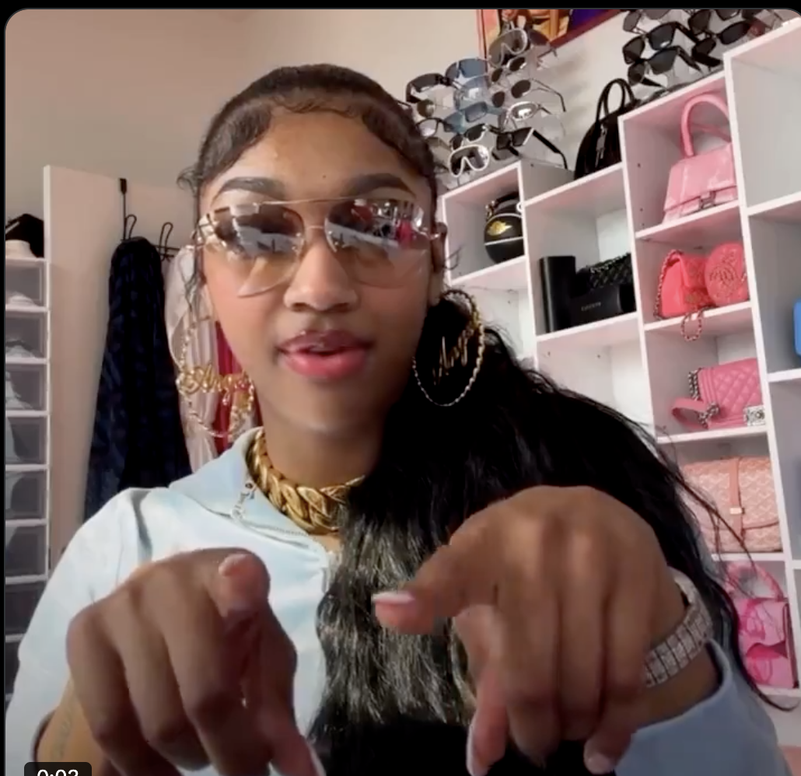

A Pore-fect Introduction

Hadiyah Daché, licensed cosmetologist & esthetician
Esthetician Life & Business
1 min
← All articlesThe Book →Friendly reminder: this post contains affiliate links, which help support the Glowdega Archive. If you buy through them, I may earn a commission at no extra cost to you.
PORE CHOICES the podcast launches on Tuesday, January 7, 2025. But you are listening to the first episode right now because, well, I needed to make sure I had everything set up properly lol. No clue if my tracking and analytics and everything are in the right places. Someone wrote in and said they couldn’t rate the show on Spotify (thanks for the heads up on that, btw). Turns out you can’t rate from a trailer alone so now that this episode is up, you should be able to rate, subscribe, and comment. I’m also using this as a bit of an audio test so let me know if anything sounds off, if I’m talking too fast, talking too slow, etc.
In this episode, I’m talking about:
PORE DECISIONS
The New Year Slowdown: Why estheticians lose clients this time of year and why that’s okay
How to bring clients in for the first 6 weeks of the year
A marketing hack to build customer loyalty
PORE REPORT
AvonnaSunshine x Patrick Ta drama
Alec Baldwin’s 11-year-old daughter writing a book about skincare
LINKS
https://www.shopify.com/blog/customer-acquisition-cost-by-industry#7
https://www.yahoo.com/entertainment/alec-hilaria-baldwin-face-backlash-140041804.html
https://www.etsy.com/market/loyalty_scratch_off